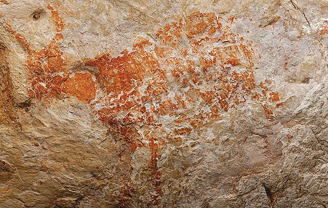
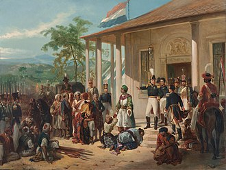
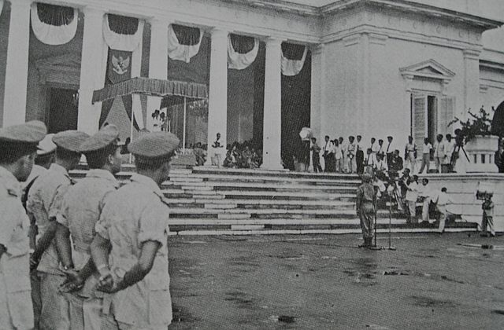
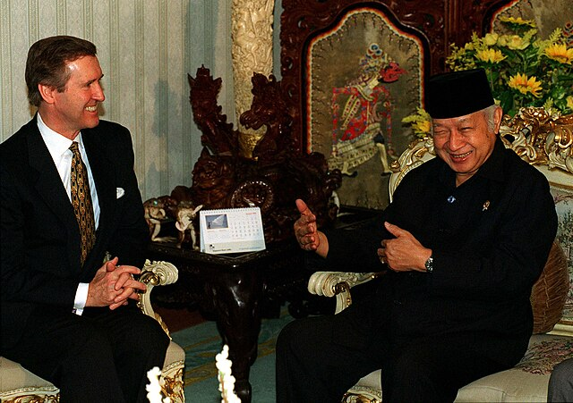
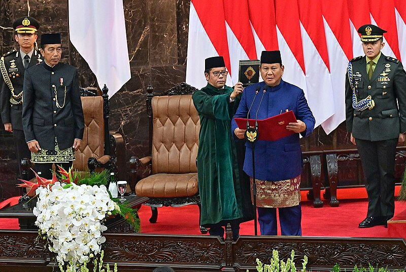

The History of Indonesia
Prehistoric Indonesia
Fossilised remains of Homo erectus, popularly known as the "Java Man", suggest the Indonesian archipelago was inhabited two million to 500,000 years ago.
Homo sapiens reached the region around 43,000 BCE. Austronesian peoples, who form the majority of the modern population, migrated to Southeast Asia from what is now Taiwan.
They arrived in the archipelago around 2,000 BCE and confined the native Melanesians to the far eastern regions as they spread east.
Ideal agricultural conditions and the mastering of wet-field rice cultivation as early as the eighth century BCE allowed villages, towns, and small kingdoms to flourish by the first century CE.
The archipelago's strategic sea-lane position fostered inter-island and international trade, including with Indian kingdoms and Chinese dynasties, from several centuries BCE. Trade has since fundamentally shaped Indonesian history.

Era of Colonialism
The first Europeans arrived in the archipelago in 1512, when Portuguese traders, led by Francisco Serrão, sought to monopolise the sources of nutmeg, cloves, and cubeb pepper in the Maluku Islands. Dutch and British traders followed.
In 1602, the Dutch established the Dutch East India Company (Verenigde Oostindische Compagnie; VOC) and became the dominant European power for almost 200 years.
The VOC was dissolved in 1799 following bankruptcy, and the Netherlands established the Dutch East Indies as a nationalised colony.
For most of the colonial period, Dutch control over the archipelago was tenuous.
Dutch forces were engaged continuously in quelling rebellions on and off Java.
The influence of local leaders such as Prince Diponegoro in central Java, Imam Bonjol in central Sumatra, Pattimura in Maluku, and the Aceh War weakened the Dutch and tied up the colonial military forces.
Only in the early 20th century did Dutch dominance extend to what was to become Indonesia's current boundaries.
During World War II, the Japanese invasion and occupation ended Dutch rule and encouraged the independence movement.
Two days after the surrender of Japan in August 1945, influential nationalist leaders Sukarno and Mohammad Hatta issued the Proclamation of Indonesian Independence.
Sukarno, Hatta, and Sutan Sjahrir were appointed president, vice-president, and prime minister, respectively. The Netherlands attempted to re-establish their rule.
In the beginning of the Indonesian National Revolution, the Dutch recognised Indonesian independence in the face of international pressure in December 1949, following the Dutch–Indonesian Round Table Conference.
Despite political, social, and sectarian divisions, Indonesians found unity in their fight for independence.

Old Order
The era of Guided Democracy in Indonesia (1957–1966) was introduced by President Sukarno to address political instability and unify the nation amid severe fragmentation and frequent government changes during parliamentary democracy. Sukarno centralized power, sidelining parliament and replacing Western-style democracy with a system emphasizing unity and consensus, inspired by traditional village governance. Guided Democracy balanced nationalism, religion, and communism (Nasakom), while the military gained significant political influence under martial law. Sukarno reinstated the 1945 Constitution, granting himself broad powers, and nationalized Dutch-owned businesses, but economic mismanagement and inflation caused widespread hardship. Despite successes in maintaining national unity and elevating Indonesia’s global diplomatic role, the system’s authoritarian nature stifled democratic freedoms, leading to its collapse after the 1965 political upheaval and the rise of Suharto’s New Order regime. 
New Order
Immediately following the attempted coup in 1965, the political situation was uncertain, and Suharto's New Order found much popular support from groups wanting a separation from Indonesia's problems since its independence.
The 'generation of 66' (Angkatan 66) epitomised talk of a new group of young leaders and new intellectual thought.
Following Indonesia's communal and political conflicts, and its economic collapse and social breakdown of the late 1950s through to the mid-1960s, the "New Order" was committed to achieving and maintaining political order, economic development, and the removal of mass participation in the political process.
The features of the "New Order" established from the late 1960s were thus a strong political role for the military, the bureaucratisation and corporatisation of political and societal organisations, and selective but brutal repression of opponents.
Strident anti-communist, anti-socialist, and anti-Islamist doctrine remained a hallmark of the presidency for its subsequent 30 years.
Within a few years, however, many of its original allies had become indifferent or averse to the New Order, which comprised a military faction supported by a narrow civilian group.
Among most members of the pro-democracy movement that forced Suharto to resign in the May 1998 riots and then gained power, the term "New Order" has come to be used pejoratively.
It is frequently employed to describe figures who were either tied to the Suharto period, or who upheld the practises of his authoritarian administration, such as corruption, collusion, and nepotism (widely known by the acronym KKN: korupsi, kolusi, nepotisme).

President Soeharto
President Soeharto meeting with US Defense Minister
Era of Reformation
The Post-Suharto era (Indonesian: Era pasca-Suharto) is the contemporary history in Indonesia, which began with the resignation of authoritarian president Suharto on 21 May 1998. Since his resignation, the country has been in a period of transition known as the Reform era (Indonesian: Era Reformasi). This period has been characterised by a more open political-social environment and grassroots economic improvement. Issues over this period have included a push for a stronger democracy and civilian rule, elements of the military trying to retain their influence, a growing Islamism in politics and society, and demands for greater regional autonomy. The process of reformasi has resulted in a higher degree of freedom of speech, in contrast to the pervasive censorship under the New Order. This has led to a more open political debate in the news media and increased expression in the arts. Events that have shaped Indonesia in this period include the independence of East Timor, a bombing campaign by Islamic terrorists (including the 2002 Bali bombings), the 2004 Indian Ocean earthquake, religious and political tensions from 2016 to 2019, and the COVID-19 pandemic. 